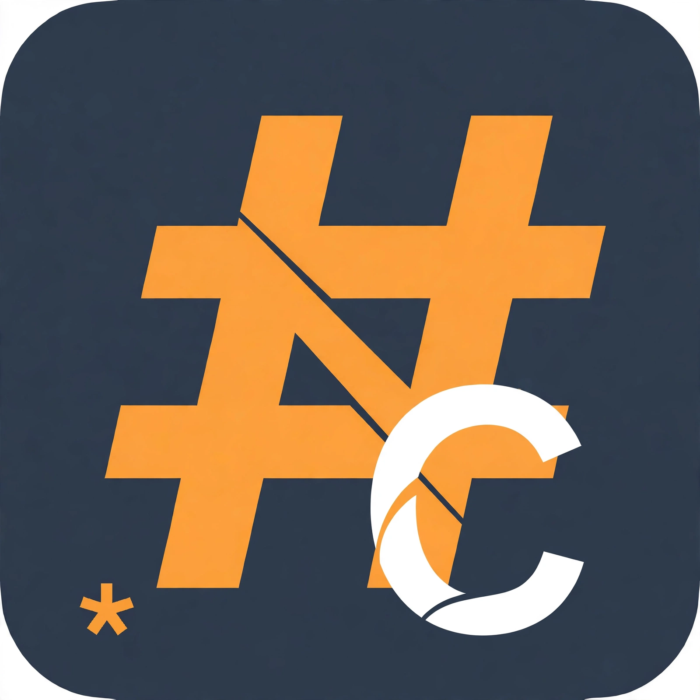

いま流れているもの

読み込み中…
次の番組まで
--:--:--
—
—
長編は毎日 12 / 15 / 18 / 21時。合間にネルラジニュース (10・11・13・14・16・17・19・20・22時)、毎時15分に交通情報、毎時45分に天気情報が入ります。
週間編成 — 長編 12 / 15 / 18 / 21時
実際に放送中の編成です。「将来」とある枠はテーマ番組を制作中で、いまはガジェットマニアを放送しています。

cast.architectural-n.netNERURU RADIO — AI GENERATED, ALWAYS ON
AI がつくる、どこでも聴けるラジオ。長編番組とニュース、交通・天気スポットが24時間流れ続けます。
現在の時間帯の番組を確認中…
読み込み中…
--:--:--
—
—
長編は毎日 12 / 15 / 18 / 21時。合間にネルラジニュース (10・11・13・14・16・17・19・20・22時)、毎時15分に交通情報、毎時45分に天気情報が入ります。
実際に放送中の編成です。「将来」とある枠はテーマ番組を制作中で、いまはガジェットマニアを放送しています。
—